AIMOS Conference 2025
19 to 21 November 2025
The University of Sydney
The University of Sydney
The purpose of AIMOS is to make the research process more trustworthy and efficient, and to promote the study of how research is done and how it can be improved. Our annual conference is an important collaborative space that advances this purpose.
AIMOS 2025 will bring together researchers from multiple disciplines to talk about how research is done and how we can do it better.
Preceding the AIMOS conference is the International Research Integrity Conference which will be held in Randwick, Sydney on November 17-18, and the Australasian Ethics Network Conference being held in Newcastle, November 6-7.
This year, AIMOS is engaging in an exciting partnership with the Evidence, Policy, and Influence Collaborative (EPIC) at the University of Sydney to spotlight commercial determinants of health at AIMOS 2025.
Commercial determinants of health refer to private sector activities that influence public health, and the political and economic systems and norms that enable them. Corporate or industry sponsorship of health and other research can bias how studies are designed, conducted, analysed and reported, and systematically over- or underestimate true research findings to present conclusions that favour the sponsor’s product. Examples of corporate influence on research are known in big food, tobacco, pharmaceuticals, gambling, alcohol, and the environment on health. Minimising bias in research due to corporate influence, as well as methodological limitations are essential to research integrity and public policy.
At AIMOS 2025, speakers and sessions will explore both the metaresearch issues we are known for, as well as the influences of commercial determinants of health, policy responses, and solutions to address these biases.
| 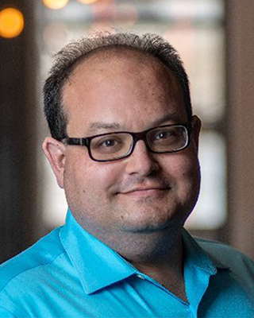 | 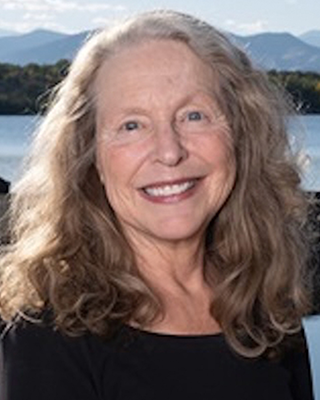 | 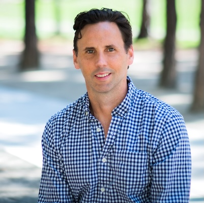 |
| Ivan Oransky | Lisa Bero | Nick Chartres |
| Ivan is a medical journalist who earned his bachelor's degree from Harvard, where he held the executive editor position of The Harvard Crimson, and his M.D. from the New York University School of Medicine. He is perhaps most well-known as a co-founder of Retraction Watch, the most comprehensive database of retracted articles in academic publishing. Ivan's work has been internationally recognised for its contribution to scientific intergity. In 2015, he was awarded the John P. McGovern Award for excellence in biomedical communication from the American Medical Writers Association. In 2017, he received an honorary doctorate of civil laws from The University of the South (Sewanee). And in 2019, he was given a commendation by the judges of the prestigious John Maddox Prize. He has been featured in the New York Times and is often called upon for comments by major academic news publishers for his perspective on issues surrounding research publication integrity. | Professor Bero is a leader in evidence synthesis, meta-research and studying commercial determinants of health, focusing on tobacco control, pharmaceutical policy, and public health. She provides international leadership for multidisciplinary teams that specialize in studying the quality, use and implementation of research for health and health policy. She is Senior Editor, Research Integrity for the Cochrane Collaboration and was Co-Chair of the Cochrane Governing Board 2014-18. Dr. Bero has developed and validated qualitative and quantitative methods for assessing bias in the design, conduct and dissemination of research. She has pioneered the utilization of internal industry documents and transparency databases to understand corporate tactics and motives for influencing research evidence. She is internationally recognized for her work on evidence synthesis, bias, conflicts of interest and use of evidence in decisions as shown by media coverage, speaking invitations and service on national and international committees, such as US National Academies of Science Committees, the World Health Organization Essential Medicines and guideline committees. | Dr. Nicholas Chartres is a Senior Research Fellow at The University of Sydney where he studies the commercial determinants of health, focusing on chemicals, nutrition and public health. He recently launched the Center to End Corporate Harm at the University of California, San Francisco (UCSF) which brings together scientists who study various health-harming industries (fossil fuels, chemicals, plastics, alcohol, tobacco, ultra-processed foods and opioids) and, in collaboration with the UCSF Industry Documents Library, are working to identify, analyze, and prevent industry-driven disease. Nick is also a research methodologist specialising in the conduct of environmental health and nutrition systematic reviews. He works with national and international organizations and agencies, including the World Health Organization, to conduct reviews of the evidence and develop guidelines using empirically based methods to ensure improved consistency, greater transparency, and reduced bias when evaluating the scientific evidence and formulating recommendations. |
| 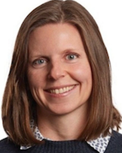 | 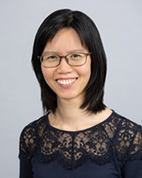 | 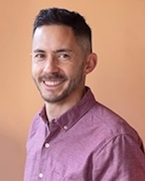 | |
| Jen Beaudry | Joanna Diong | Jason Chin | |
| (President) | (Chair) |
| 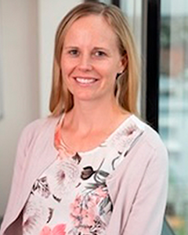 | 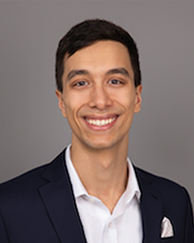 | 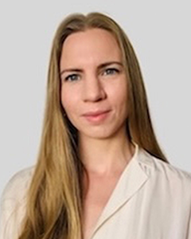 | |
| Kylie Hunter | Aidan Tan | Annie Whamond |
| 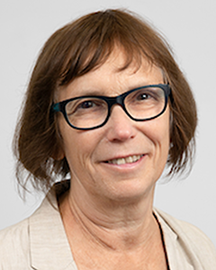 | 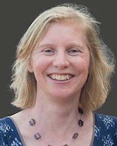 | 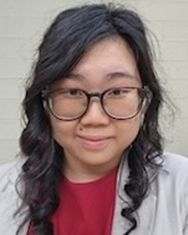 | 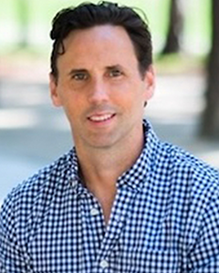 | |
| Barbara Mintzes | Lisa Parker | Kellia Chiu | Nicholas Chartres |
|
|
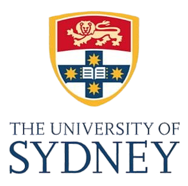 |
Sign up here to the AIMOS mailing list to get updates on the conference and other meta-research events.
Got a question about the conference? Email Joanna at: joanna.diong@sydney.edu.au.
Want to know more about AIMOS? Here's our web page.